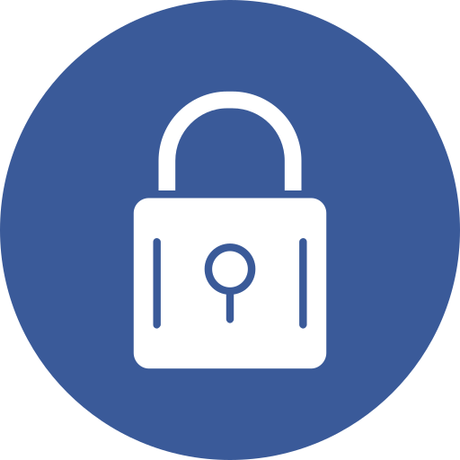

Dont Touch the Button
Minihra, kde se tlačítko snaží unikat kurzoru. Po každém chycení se chování mění.
Zobrazit projekt

Minihra: Hladový křeček
Interaktivní webová hra, kde hráč sbírá semínka s křečkem, který sleduje myš.
Zobrazit projekt

Login systém v JavaFX
Java aplikace s grafickým přihlašováním, kontrolou vstupů a přepínáním scén.
Zobrazit projekt